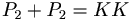

K-K Man
 De: La Frikipedia, la enciclopedia extremadamente seria.
De: La Frikipedia, la enciclopedia extremadamente seria.
| De la serie Superhéroes:
|
| K-K Man
|
|
|
| Nacimiento:
|
Cuando comiste esa haburguesa
|
| Muerte:
|
Cuando le jales al retrete
|
| Superpoderes:
|
Unos poderes de mierda!
|
| Debilidad:
|
Humedad?
|
| Asistente
|
Conejitou
|
| Notas:
|

|
«Cuando encuentre a mi hermano... lo juro que le quemare el culo por no pagarme las Gambas»
~ K-K Man Gritando después de que su hermano desapareciera
KK-MAN o K-K Man es un Superhéroe de comics cachado en la ciudad perdida de Shile... "KK-CITY"
Otros Nombres
- KaKa Man
- Cacaman
- Superbollo
- SKT-MAN
- Skat-man
- Shitman
- KRP-MAN (Crap man.)
- "K"
- Karlos
- Weonidas
- IP anónima
Historia
(Advertencia... este es el adelanto del flash... si quieres conocer la historia de éste, tienes que aguantarte hasta cuando los cojones vuelen)

|
CUIDADÍNEste artículo o sección contiene alerones feos. O sea
SPOILERS.
|
Una de las escenas más esperadas...
El origen de este tapón de M "singular" superheroe llamado Karlos...no me lo sé... pero sé que el origen de sus superpoderes fue gracias a un pacto con Chuck Norris,Son Goku y Super Taldo, y desde ahí vive en KK City.
Su primer compañero fue su hermano ,pero se perdió junto a Nemo. En ese tiempo estuvo solo y conoció a Shantozkit(Lea su articulo abajo). "K" al conocer a éste, Incinero mató al primo del Señor Mojon y de "Crapguy" (El Maldito bastardo, villano, sin corazón, ekt,ekt...)
Éste por venganza mató y convirtió a su primo en "Rapishit", y finalmente formó su equipo de bicharrajos raros ultra poderosos, que lo ayudan a dar hostias a los malos que atacan la ciudad de los que quieren Dominar el mundo,los de VALMPP(Vallanse A La Mierda Pinche Perra)el grupo de los villanos.
Super Poderes
En orden de izquierda a derecha
- El "Pishi cn melda" (Pichi con Mierda) (Heredado por Son Goku)
Un super ataque (tipo hame hame ha) que te quema hasta dejarte como Mierda(vaya sorpresa).
- El "Golpe coshino" (Golpe cochino) (Heredado por Chuck Norris)
Un "Upercut" que te deja mosqueado.
- El "Tornado" (de Super Taldo)
Un movimiento que gira como taladro y marea al malo.
- El "Super tornado" que junto a Shantoskit giran a 1000 kmH y colapsan creando una nube de humo.
Su Mafia
Dícese que sus compañeros son unos monos raros con estas características:
- Shantozkit: Pajarraco super-musculoso que se reencarna a un duende raro al morir, pero se asusta hasta con un pelotazo.
- Pelotuo: Pelota con patas de poca inteligencia.
- Sucka Cloud: Una Nube flaite que se cree la muerte.
- Vampayer: Vampiro con lentes, medio dark (El Mateo).
- Conejitou: Una especie de Conejo homosexual con el que se emborracha en la K-Masu los viernes por la noche.
- Roki: Roca viviente, Fan Nº1 de su líder y de la Coca-cola.
- Shantaman:Cebolla con manos y capa (burdo imitador barato de su líder).
- K-K Woman: Caca sexy y ágil.
Juntos se llaman el "KK Team" pero hay una sola mierda en el equipo. Y K-K Woman trabaja en solitario.
Enemigos (VALMPP)
Crapguy saluda a la cámara para todos los weones que lo miran
- L33T SKT:(Élite SCAT)(Caca Élite) Una versión metálica de este (Habla idioma "Ingles-l33t--H4x0r")y que se pokemoniza en sí pero más fuerte.
- Crapguy: Enemigo mortal luego de que KK-Man matará a su primo.
- Roger B. : Gusano guerrero y gilipollas.
- Rapishit: Su Hermano!!!
- Los Pooptroopers: Los soldados que trabajarán antes de ser reemplazados por los L33T Tr00pah$
- L33T Tr00pah$: Diseños (clones) basados en L33T SKT que principalmente son la misma wea pero no se pokemonizan.
- I<-I< M@n: Androide creado como la mejor versión de L33t SKT con un paresido IDENTICO a K-K Man pero mas malo que Marleytuga.
Otros enemigos
- Sr. Cagón: Fue primo de Crapguy y del Señor Mojon.
- Fayer y Aiz: dos hermanos gemelos... el Fuego y el Hielo o La Espada en la Mierda...
Frases Celebres
- QUE MIERDA?
- Te cagare...
- Pishi cn melda!!!!
- Avispense sacos de wea!
- NO HAY PIEDAD!!!
- OH MIERDA
- PUTA EL WEON ASQUEROSO!
- Que chu..?
- ESTO ES ESKARTA!
- Te Voy A Hacer Mierda!
- NO ME DEJI AWEONAO!
- Shuaaata!!!!
Autor(es):
- Aque
- Alex2610
- Roms
- Tachin
- Pandorosa
- ANorMaliTa
- Cibercrank
- ArreKarallo
- ROCKandRoll
- Kevrochi
Frikipedia 2005-2016, Licencia
GFDL 1.2 - Extraído por FrikiLeaks